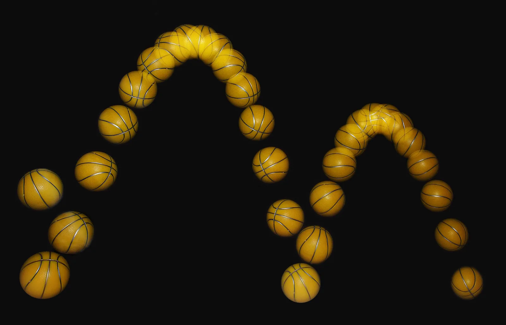

Putoamiskiihtyvyys: $v = g\,t$
Miksi vasara ja höyhen osuivat Kuun pintaan yhtä aikaa, kun astronautti pudotti ne samaan aikaan, vaikka Maassa höyhen leijailee hitaasti alas?
Pohjatiedot
- Tasaisessa liikkeessä matka on nopeuden ja ajan tulo, $s = vt$luku Tasainen liike – nopeus, paikka ja kuvaajat
- Suoran kuvaajan kulmakerroin kertoo, kuinka paljon pystyakselin suure muuttuu, kun vaaka-akselin suure kasvaa yhdelläluku Graafinen esitys ja suoran sovittaminen
Ydinpolku: etene vaiheiden mukaan. Ydinpolkuun kuuluvat laskujen lisäksi tutkimukset, selitykset ja kuvaajat. Valinnainen-merkityt tehtävät tarjoavat lisäharjoittelua. Valinnaisia tehtäviä 3.
Pohdinta
Vuonna 1971 Apollo 15 -lennolla astronautti David Scott piti Kuun pinnalla toisessa kädessä vasaraa ja toisessa haukan sulkaa ja päästi ne irti samaan aikaan. Ne osuivat Kuun pintaan yhtä aikaa. Kotona sama koe ei onnistu: vasara putoaa suoraan alas, mutta höyhen leijailee hitaasti.
Kasvaako putoavan kappaleen nopeus tasaisesti, ja putoaako raskas kappale nopeammin kuin kevyt?
Kertaa edellinen luku
Ennusta
Tee ennusteet ennen tutkimista 2 kysymystä
Ennuste 1: miten nopeus kasvaa
Ennuste 2: vaikuttaako massa
Tutki
Simulaatio
Käyttöohje
Paina Pudota tai vedä Hetki $t$ -liukusäädintä ja katso, miten pallot putoavat ja miten kuvaaja piirtyy. Valitse Ympäristö (tyhjiö tai ilma) ja säädä pallojen massat. Nuolen pituus on nopeus, ja pisteet merkitsevät kokonaisia sekunteja. Katkoviiva on kaava $v = g\,t$.
Mallin oletukset
Arvot ovat simulaation laskemia mallin arvoja, eivät mittauksia. Pallot ovat samankokoiset, ja ne lähtevät levosta. Tyhjiössä pallojen kiihtyvyys on koko ajan putoamiskiihtyvyys $g = 9{,}81\,\text{m/s}^2$. Ilmassa pallon halkaisija on $0{,}20\,\text{m}$, ja ilma hidastaa palloa sitä enemmän, mitä nopeammin se liikkuu. Tuuli ja pallon pyöriminen jätetään huomiotta.
Laskennan selitys
Tyhjiössä nopeus lasketaan kaavalla $v = g\,t$. Luku $v : t$ kertoo, kuinka paljon nopeus on kasvanut keskimäärin sekunnissa, kun pallo lähti levosta. Ilmassa nopeuden kasvu hidastuu nopeuden kasvaessa, ja nopeus lähestyy rajanopeutta. Kevyellä pallolla rajanopeus on pienempi kuin raskaalla, joten $v : t$ jää kevyellä pallolla pienemmäksi.
Simulaatiossa kaksi samankokoista palloa putoaa levosta, ja niiden nopeudet piirtyvät $(t, v)$-kuvaajaan.
Koe 1: kasvaako nopeus tasaisesti
Testaa ennuste 1. Alkutila valitsee tyhjiön ja asettaa pallojen massoiksi $1{,}0\,\text{kg}$ ja $8{,}0\,\text{kg}$. Paina Pudota ja seuraa, miten kuvaaja piirtyy. Pysäytä sitten kello vetämällä Hetki $t$ -liukusäädintä ja kirjaa nopeudet vähintään kolmella hetkellä, esimerkiksi $1{,}0\,\text{s}$, $2{,}0\,\text{s}$ ja $3{,}0\,\text{s}$.
Alkutila: ilmanvastus = 0 (ei ilmaa: tyhjiö), massa $m_\text{A}$ = $1\,\text{kg}$, massa $m_\text{B}$ = $8\,\text{kg}$, hetki $t$ = $0\,\text{s}$. Vakiona: ilmanvastus, massa $m_\text{A}$, massa $m_\text{B}$. Muutetaan: hetki $t$.
| hetki $t$ | $v_\text{A}$ $(\text{m/s})$ | $v_\text{B}$ $(\text{m/s})$ |
|---|
Laske pallon A nopeuden kasvu sekunnissa, $\dfrac{\Delta v}{\Delta t}$, taulukon kahden rivin avulla. Vastaa yksikössä $\text{m/s}^2$.
Vihje 1: ohjaava kysymys
Nopeuden kasvu sekunnissa on nopeuden muutos jaettuna ajan muutoksella. Valitse kaksi riviä ja lue niistä pallon A nopeus ja aika.
Vihje 2: mikä yhteys
Käytä saraketta $v_\text{A}$.
Vihje 3: välivaihe
Jos rivit ovat $t = 1{,}0\,\text{s}$ ja $t = 3{,}0\,\text{s}$, niin
Näytä ratkaisu
Annettu
taulukon kaksi riviä, esimerkiksi $t_1 = 1{,}0\,\text{s}$, $v_1 = 9{,}81\,\text{m/s}$ ja $t_2 = 3{,}0\,\text{s}$, $v_2 = 29{,}4\,\text{m/s}$ (mallin arvoja pallolle A tyhjiössä)
Kysytty
nopeuden kasvu sekunnissa $\dfrac{\Delta v}{\Delta t}$ yksikössä $\text{m/s}^2$
Periaate
Jos nopeus kasvaa joka sekunti saman verran, mitkä tahansa kaksi taulukon riviä antavat saman osamäärän. Tämä osamäärä on nopeuden muutos jaettuna ajan muutoksella eli kiihtyvyys.
Kaava
Muunnokset
Nopeudet ovat yksikössä $\text{m/s}$ ja ajat sekunteina, joten tulos tulee suoraan yksikössä $\text{m/s}^2$. Muunnoksia ei tarvita.
Sijoitus
Vastaus
$9{,}8\,\text{m/s}^2$
Kaksi merkitsevää numeroa, koska aikaväli $2{,}0\,\text{s}$ on kahdella numerolla.
Järkevyys
Toinen rivipari antaa saman tuloksen: esimerkiksi $t = 2{,}0\,\text{s}$ ja $t = 4{,}0\,\text{s}$ antavat
Tulos on myös sama pallolle B, joten massa ei vaikuta tulokseen. Positiivinen merkki sopii siihen, että nopeus kasvaa.
Lisää tutkittavaa 4 tehtävää
Koe 2: vaikuttaako massa tyhjiössä
Testaa ennuste 2. Alkutila valitsee tyhjiön ja hetken $t = 3{,}0\,\text{s}$ ja asettaa pallon A massaksi $1{,}0\,\text{kg}$. Muuta pallon B massaa liukusäätimellä ja kirjaa nopeudet vähintään kolmella massalla, esimerkiksi $0{,}5\,\text{kg}$, $3{,}0\,\text{kg}$ ja $8{,}0\,\text{kg}$.
Alkutila: ilmanvastus = 0 (ei ilmaa: tyhjiö), hetki $t$ = $3\,\text{s}$, massa $m_\text{A}$ = $1\,\text{kg}$, massa $m_\text{B}$ = $1\,\text{kg}$. Vakiona: ilmanvastus, hetki $t$, massa $m_\text{A}$. Muutetaan: massa $m_\text{B}$.
| massa $m_\text{B}$ | $v_\text{A}$ $(\text{m/s})$ | $v_\text{B}$ $(\text{m/s})$ |
|---|
Koe 3: entä ilmassa
Nyt ilma on mukana. Alkutila valitsee ilman ja hetken $t = 4{,}0\,\text{s}$ ja asettaa pallon A massaksi $1{,}0\,\text{kg}$. Pallot ovat samankokoiset. Muuta pallon B massaa ja kirjaa nopeudet vähintään kolmella massalla, esimerkiksi $0{,}1\,\text{kg}$, $1{,}0\,\text{kg}$ ja $10\,\text{kg}$. Vertaa lukuja arvoon $g\,t = 39{,}2\,\text{m/s}$.
Alkutila: ilmanvastus = 1 (ilmaa on), hetki $t$ = $4\,\text{s}$, massa $m_\text{A}$ = $1\,\text{kg}$, massa $m_\text{B}$ = $1\,\text{kg}$. Vakiona: ilmanvastus, hetki $t$, massa $m_\text{A}$. Muutetaan: massa $m_\text{B}$.
| massa $m_\text{B}$ | $v_\text{A}$ $(\text{m/s})$ | $v_\text{B}$ $(\text{m/s})$ |
|---|
Valinnainen Esimerkkiaineisto: kuulan nopeus kuvista
Simuloitu esimerkkiaineisto
Teräskuulan putoamisesta otetaan videokuva, ja kuulan nopeus lasketaan kuvista eri hetkillä. Jokaisessa mittauksessa on pieni virhe, joten pisteet eivät osu täsmälleen samalle suoralle. Aineisto on tässä taulukkona ja $(t, v)$-kuvaajana (simuloitu esimerkkiaineisto, ei oikea koe).
| $t$ (s) | $v$ (m/s) |
|---|---|
| 0,1 | 1,0 |
| 0,2 | 2,0 |
| 0,3 | 2,9 |
| 0,4 | 3,9 |
| 0,5 | 4,9 |
Kuvaan on piirretty pisteisiin origon kautta sovitettu suora niin, että pisteet jäävät suunnilleen tasaisesti sen molemmille puolille. Aika mitataan hetkestä, jolloin kuula päästettiin levosta, joten mallin $v = g\,t$ mukaan suora kulkee origon kautta.
Valitse sovitetulta suoralta piste kaukana origosta ja lue sen $t$ ja $v$ kuvaajasta. Laske suoran kulmakerroin näiden ja origon avulla. Vastaa yksikössä $\text{m/s}^2$.
Vihje 1: ohjaava kysymys
Lue piste suoralta eikä taulukosta. Valitse piste, joka on kaukana origosta, esimerkiksi lähellä hetkeä $t = 0{,}5\,\text{s}$.
Vihje 2: mikä yhteys
Toinen piste on origo $(0\,\text{s}$; $0\,\text{m/s})$.
Vihje 3: välivaihe
Suora on hetkellä $t = 0{,}5\,\text{s}$ hieman alle ruudukkoviivan $5\,\text{m/s}$, noin $4{,}9\,\text{m/s}$.
Näytä ratkaisu
Annettu
sovitetun suoran kaksi pistettä: origo $(t_1$; $v_1) = (0\,\text{s}$; $0\,\text{m/s})$ ja kuvaajasta luettu piste $(t_2$; $v_2) \approx (0{,}50\,\text{s}$; $4{,}9\,\text{m/s})$
Kysytty
suoran kulmakerroin eli putoamiskiihtyvyys $g$ yksikössä $\text{m/s}^2$
Periaate
Kuula on vapaassa pudotuksessa, joten sen $(t, v)$-kuvaaja on suora, ja suoran kulmakerroin on putoamiskiihtyvyys. Mittauksissa on virhettä, joten kulmakerroin lasketaan sovitetun suoran pisteistä eikä yksittäisestä mittauksesta.
Kuvaajan lukeminen
Origo on annettu. Toinen piste luetaan hetkeltä $t = 0{,}50\,\text{s}$: mene tästä kohdasta ylös suoralle ja siitä vasemmalle $v$-akselille. Suora on hieman alle ruudukkoviivan $5\,\text{m/s}$, joten luetaan $v_2 \approx 4{,}9\,\text{m/s}$. Ruudukkoviivojen väli on $1\,\text{m/s}$, joten arvon voi lukea noin kymmenesosan tarkkuudella. Kaukana toisistaan olevilla pisteillä lukuvirhe on pieni verrattuna muutokseen.
Kaava
Muunnokset
Nopeus on yksikössä $\text{m/s}$ ja aika sekunteina, joten muunnoksia ei tarvita.
Sijoitus
Vastaus
$9{,}8\,\text{m/s}^2$
Kaksi merkitsevää numeroa, koska kuvaajasta luettu arvo $4{,}9\,\text{m/s}$ ja aika $0{,}50\,\text{s}$ ovat kahdella numerolla. Mittauspisteet poikkeavat suorasta noin $0{,}1\,\text{m/s}$, joten karkeasti arvioiden kulmakertoimen epävarmuus on tällä aineistolla noin $0{,}2\,\text{m/s}^2$.
Järkevyys
Tulos on lähellä taulukkoarvoa $9{,}81\,\text{m/s}^2$. Tarkistus taulukosta: viimeinen mittaus antaa
ja keskimmäinen
eli lähes sama arvo. Kulmakerroin on positiivinen, koska kuvaaja nousee.
Johtopäätös kokeista
Kirjoita kokeidesi perusteella johtopäätös: Miten putoavan kappaleen nopeus muuttuu tyhjiössä? Vaikuttaako massa siihen? Mitä ilma muuttaa? Käytä taulukkojesi lukuja.
Mallivastaus
Simulaation mallin arvojen mukaan nopeus kasvaa tyhjiössä joka sekunti saman verran: hetkillä $1{,}0\,\text{s}$, $2{,}0\,\text{s}$ ja $3{,}0\,\text{s}$ nopeus oli noin $9{,}8\,\text{m/s}$, $19{,}6\,\text{m/s}$ ja $29{,}4\,\text{m/s}$. Nopeuden kasvu sekunnissa on siis vakio, $g = 9{,}81\,\text{m/s}^2$, ja nopeus on $v = g\,t$. Pallon massa ei vaikuttanut: kun pallon B massa vaihtui, sen nopeus oli joka rivillä sama kuin pallon A nopeus. Ilmassa nopeus jäi pienemmäksi kuin $g\,t$: hetkellä $4{,}0\,\text{s}$ kevyen pallon ($0{,}1\,\text{kg}$) nopeus oli vain noin $10{,}5\,\text{m/s}$, kun taas raskaan ($10\,\text{kg}$) noin $37{,}5\,\text{m/s}$ ja kaavan arvo $39{,}2\,\text{m/s}$. Ero tulee ilmasta, ei massasta sellaisenaan. Kokeiden 1 ja 2 luvut ovat simulaation mallin arvoja, ja ne toistavat kaavan $v = g\,t$ eivätkä todista sitä; ilman vaikutus näkyy vasta kokeessa 3.
Arvioi oma vastauksesi
Rastita kohdat, jotka omassa vastauksessasi jo on.
Kertaa asia teoriasta ja harjoittele tehtävillä.
Teoria
Ydinajatus
Kun kappale päästetään putoamaan levosta, sen nopeus kasvaa. Vapaa pudotus on putoamista, jossa ilmanvastusta ei ole. Mittaukset näyttävät, että nopeus kasvaa vapaassa pudotuksessa joka sekunti yhtä paljon: Maan pinnalla $9{,}81\,\text{m/s}$ sekunnissa. Yhden sekunnin kuluttua nopeus on $9{,}81\,\text{m/s}$, kahden kuluttua $19{,}6\,\text{m/s}$ ja kolmen kuluttua $29{,}4\,\text{m/s}$. Kappale ei siis putoa tasaisella nopeudella kuten tasaisessa liikkeessä (luku Tasainen liike – nopeus, paikka ja kuvaajat), vaan se kiihtyy.
Nopeuden muutosta aikayksikköä kohti kutsutaan kiihtyvyydeksi. Vapaasti putoavan kappaleen kiihtyvyys on putoamiskiihtyvyys $g = 9{,}81\,\text{m/s}^2$. Yksikkö $\text{m/s}^2$ luetaan "metriä sekunnissa toiseen" eli "metriä sekunnissa sekunnissa": nopeus mitataan yksiköllä $\text{m/s}$, ja se muuttuu joka sekunti tämän verran. Luku $g$ ei siis ole nopeus vaan nopeuden kasvunopeus.
Massa ei vaikuta putoamiseen
Kun ilmanvastusta ei ole, kaikki kappaleet putoavat samalla kiihtyvyydellä riippumatta massastaan. Tyhjiössä vasara ja höyhen putoavat yhtä nopeasti, ja kuulalla, jonka massa on $5\,\text{kg}$, on joka hetki sama nopeus kuin kuulalla, jonka massa on $1\,\text{kg}$. Syy selitetään myöhemmin voimien yhteydessä. Tässä luvussa se otetaan koetulokseksi, jonka tutkit itse.
Ilmassa tilanne on toinen. Ilma hidastaa kevyttä ja leveää kappaletta, kuten höyhentä tai paperiarkkia, selvästi enemmän kuin pientä ja tiheää kappaletta, kuten kiveä tai teräskuulaa. Siksi kotona höyhen putoaa hitaammin kuin vasara. Eron aiheuttaa ilma, ei massa sellaisenaan.
Vapaan pudotuksen nopeus
Koska nopeus kasvaa joka sekunti yhtä paljon, nopeus on suoraan verrannollinen aikaan. Kun kappale lähtee levosta, sen nopeus hetkellä $t$ on
$$v = g\,t$$
missä $v$ on nopeus alaspäin ($\text{m/s}$), $g = 9{,}81\,\text{m/s}^2$ putoamiskiihtyvyys ja $t$ aika pudotuksen alusta ($\text{s}$). Kaava on lineaarinen malli $v = kt$, jossa kulmakerroin $k$ on $g$. Se pätee, kun ilmanvastusta ei ole.
Putoavan kappaleen $(t, v)$-kuvaaja on siis origon kautta kulkeva nouseva suora. Sen kulmakerroin $\tfrac{\Delta v}{\Delta t}$ on putoamiskiihtyvyys, joten $g$ saadaan kuvaajasta lukemalla siltä kaksi kaukana toisistaan olevaa pistettä. Koska kiihtyvyys on vakio, mille tahansa aikavälille pätee $\Delta v = g\,\Delta t$: alaspäin liikkuvan kappaleen nopeus kasvaa sekunnissa $9{,}81\,\text{m/s}$ myös silloin, kun kappale ei lähtenyt levosta.

Yleinen virhekäsitys
Raskas kappale ei putoa nopeammin kuin kevyt: kun ilmanvastusta ei ole, kaikilla kappaleilla on sama $g$. Arkikokemus näyttää toista, koska ilma jarruttaa eniten kevyen ja leveän kappaleen putoamista. Toinen virhe on pitää lukua $g = 9{,}81\,\text{m/s}^2$ nopeutena: se kertoo, kuinka paljon nopeus kasvaa joka sekunti, ja nopeus itse on $g\,t$.
Tiivistelmä
- Vapaassa pudotuksessa ei ole ilmanvastusta. Kappaleen nopeus kasvaa joka sekunti yhtä paljon.
- Putoamiskiihtyvyys on Maan pinnalla $g = 9{,}81\,\text{m/s}^2$, ja se on sama kaikille kappaleille massasta riippumatta.
- Levosta lähteneen kappaleen nopeus on $v = g\,t$, ja $(t, v)$-kuvaaja on origon kautta kulkeva suora, jonka kulmakerroin on $g$.
- Ilmassa ilma jarruttaa eniten kevyen ja leveän kappaleen putoamista, joten kaava $v = g\,t$ pätee vain, kun ilmanvastus voidaan jättää huomiotta.
- Muunnos: nopeudella $1\,\text{m/s}$ kuljetaan tunnissa $3600\,\text{m} = 3{,}6\,\text{km}$, joten $1\,\text{m/s} = 3{,}6\,\text{km/h}$.
Valinnainen Palaa ennusteisiisi
Vertaa ennusteitasi taulukoihin ja kuvaajiin. Mitä sait selville nopeuden kasvusta ja massan vaikutuksesta? Palaa myös alun vasaraan ja höyheneen: miksi ne putosivat Kuussa yhtä nopeasti mutta Maassa eri tavalla?
Muuttaisitko ennustettasi?
Esimerkit
Kun olet opiskellut luvun teorian, siirry ohjattuihin esimerkkeihin. Ensimmäisessä seuraat mallilaskua vaihe vaiheelta, seuraavissa teet valinnat itse, ja vihjeet auttavat, jos jäät jumiin.
Esimerkki 1: Kivi putoaa sillalta
Kivi pudotetaan levosta sillalta, ja se osuu veteen $1{,}5\,\text{s}$ myöhemmin. Mikä on kiven nopeus veteen osuessa yksiköissä $\text{m/s}$ ja $\text{km/h}$? Ilmanvastus jätetään huomiotta.
Vaihe 1/7
Tunnetut ja kysytty. Pudotuksen kesto on $t = 1{,}5\,\text{s}$, kivi lähtee levosta ja putoamiskiihtyvyys on $g = 9{,}81\,\text{m/s}^2$. Kysytään nopeutta $v$ osuman hetkellä ensin yksikössä $\text{m/s}$ ja sitten yksikössä $\text{km/h}$.
Vaihe 2/7
Periaate. Kivi on vapaassa pudotuksessa, koska ilmanvastus jätetään huomiotta, ja se lähtee levosta. Silloin nopeus kasvaa joka sekunti saman verran, joten nopeus on suoraan verrannollinen aikaan: $v = g\,t$.
Vaihe 3/7
Kaava ratkaistuna. Kaava on jo ratkaistu kysytyn suureen suhteen:
$$v = g\,t$$
Vaihe 4/7
Yksikkömuunnokset. Aika on sekunteina ja $g$ yksikössä $\text{m/s}^2$, joten tulos tulee yksikössä $\text{m/s}$ ilman muunnosta. Kilometreiksi tunnissa muunnetaan miettimällä, mitä $1\,\text{m/s}$ tarkoittaa: tunnissa ($3600\,\text{s}$) kertyy $3600\,\text{m} = 3{,}6\,\text{km}$, joten $1\,\text{m/s} = 3{,}6\,\text{km/h}$. Tämä sijoitetaan yksikön paikalle.
Vaihe 5/7
Sijoitus. $$\begin{aligned} v &= g\,t \\ &= 9{,}81\,\text{m/s}^2 \cdot 1{,}5\,\text{s} \\ &= 14{,}715\,\text{m/s} \\[4pt] v &= 14{,}715 \cdot 1\,\text{m/s} \\ &= 14{,}715 \cdot 3{,}6\,\text{km/h} \\ &= 52{,}97\,\text{km/h} \end{aligned}$$
Vaihe 6/7
Tulos. Nopeus on $v \approx 15\,\text{m/s}$ eli $v \approx 53\,\text{km/h}$. Kaksi merkitsevää numeroa, koska aika $1{,}5\,\text{s}$ on annettu kahdella numerolla. Muunnos tehdään pyöristämättömästä arvosta, ei pyöristetystä $15\,\text{m/s}$.
Vaihe 7/7
Järkevyys. Kuvaajasta nähdään sama: hetkellä $1\,\text{s}$ nopeus on $9{,}81\,\text{m/s}$ ja hetkellä $2\,\text{s}$ se on $19{,}6\,\text{m/s}$, joten hetkellä $1{,}5\,\text{s}$ nopeus on näiden arvojen puolivälissä, noin $15\,\text{m/s}$. Nopeus $53\,\text{km/h}$ on kaupunkiliikenteen autolle tavallinen vauhti, ja se on järkevä tulos pudotukselle, joka kestää vain puolitoista sekuntia.
Valinnainen Esimerkki 2: Etsi virhe
Esimerkki 3: Sovella uuteen tilanteeseen
Tutkija pudottaa kiven tuntemattomalla planeetalla, jolla ei ole ilmakehää. Kivi lähtee levosta, ja sen nopeus on $2{,}0\,\text{s}$:n kuluttua $7{,}4\,\text{m/s}$.
Mikä on kiven nopeus $3{,}0\,\text{s}$:n kuluttua? Vastaa yksikössä $\text{m/s}$.
Vihje 1: ohjaava kysymys
Mikä luku kertoo, kuinka paljon nopeus kasvaa sekunnissa? Selvitä se annetuista tiedoista.
Vihje 2: mikä yhteys
Putoamiskiihtyvyys on $g = \dfrac{v}{t}$ ja nopeus myöhemmin $v = g\,t$. Planeetan $g$ ei ole Maan arvo.
Vihje 3: välivaihe
ja sitten $v = g \cdot 3{,}0\,\text{s}$.
Näytä ratkaisu
Annettu
kivi lähtee levosta, $v_1 = 7{,}4\,\text{m/s}$ hetkellä $t_1 = 2{,}0\,\text{s}$, haluttu hetki $t_2 = 3{,}0\,\text{s}$; ilmakehää ei ole
Kysytty
kiven nopeus $v_2$ hetkellä $t_2$ yksikössä $\text{m/s}$
Periaate
Ilmakehän puuttuessa kivi on vapaassa pudotuksessa, joten nopeus on suoraan verrannollinen aikaan: $v = g\,t$. Planeetan $g$ ei ole Maan arvo, mutta se on vakio, joten se saadaan annetusta mittauksesta ja sillä lasketaan nopeus toisella hetkellä.
Kaava
$g = \dfrac{v_1}{t_1}$ ja $v_2 = g\,t_2$, joten $v_2 = \dfrac{v_1}{t_1}\,t_2$
Muunnokset
Nopeudet ovat yksikössä $\text{m/s}$ ja ajat sekunteina, joten muunnoksia ei tarvita.
Sijoitus
Vastaus
$11\,\text{m/s}$
Kaksi merkitsevää numeroa kuten tiedoissa $7{,}4\,\text{m/s}$ ja $2{,}0\,\text{s}$.
Järkevyys
Nopeus on suoraan verrannollinen aikaan, joten $3{,}0\,\text{s}$ on puolitoistakertainen aika $2{,}0\,\text{s}$:ään verrattuna ja nopeuden pitää olla puolitoistakertainen: $1{,}5 \cdot 7{,}4\,\text{m/s} = 11{,}1\,\text{m/s}$. Planeetan $g = 3{,}7\,\text{m/s}^2$ on pienempi kuin Maan $9{,}81\,\text{m/s}^2$, joten nopeus on pienempi kuin Maassa samalla ajalla ($29{,}4\,\text{m/s}$).
Kertaa luvun käsitteet
Jos valitset Kertaa myöhemmin, kortti siirtyy kertauspakkaasi.
- Kiihtyvyys
- Kertoo nopeuden muutoksen aikayksikössä.$$a = \dfrac{\Delta v}{\Delta t}$$
- Vapaa pudotus
- Liike, jossa ilmanvastus sivuutetaan ja kappaleeseen vaikuttaa vain painovoima.
- Putoamiskiihtyvyys
- Vapaasti putoavan kappaleen kiihtyvyys. Maan pinnalla vapaasti putoavan kappaleen nopeus kasvaa noin $9{,}81\,\text{m/s}$ joka sekunti.$$g \approx 9{,}81\,\text{m/s}^2$$
Tehtävät
Taso 1 · perusharjoitus 8 tehtävää
Yksi kaava tai yksi päättelyaskel. Ydintehtävät ensin, loput lisäharjoitusta.
- Tehtävä 6-1Ydintehtävä
Pallo päästetään putoamaan levosta, ja ilmanvastus jätetään huomiotta. Mikä on pallon nopeus, kun pudotuksen alusta on kulunut $3{,}0\,\text{s}$?
Vastaus
$29\,\text{m/s}$
Näytä ratkaisu
Annettu
pallo lähtee levosta, $t = 3{,}0\,\text{s}$, putoamiskiihtyvyys $g = 9{,}81\,\text{m/s}^2$
Kysytty
pallon nopeus $v$ yksikössä $\text{m/s}$
Periaate
Ilmanvastus jätetään huomiotta, joten pallo on vapaassa pudotuksessa. Silloin nopeus kasvaa joka sekunti saman verran, ja levosta lähteneen kappaleen nopeus on suoraan verrannollinen aikaan.
Kaava
$v = g\,t$, joka on jo ratkaistu kysytyn nopeuden suhteen.
Muunnokset
Aika on sekunteina ja $g$ yksikössä $\text{m/s}^2$, joten tulos tulee suoraan yksikössä $\text{m/s}$. Muunnoksia ei tarvita.
Sijoitus
$v$$= 9{,}81\,\text{m/s}^2 \cdot 3{,}0\,\text{s}$$= 29{,}43\,\text{m/s}$Vastaus
$29\,\text{m/s}$
Kaksi merkitsevää numeroa kuten ajassa $3{,}0\,\text{s}$.
Järkevyys
Nopeus kasvaa noin $10\,\text{m/s}$ sekunnissa, joten kolmessa sekunnissa se on noin $3 \cdot 10\,\text{m/s} = 30\,\text{m/s}$, mikä vastaa tulosta. Lisäksi $29{,}43\,\text{m/s} \approx 106\,\text{km/h}$ on maantienopeus, mikä on järkevä tulos kolmen sekunnin vapaalle pudotukselle.
- Tehtävä 6-2
Omena irtoaa oksasta ja putoaa levosta maahan $0{,}80\,\text{s}$:ssa. Ilmanvastus jätetään huomiotta. Mikä on omenan nopeus maahan osuessa?
Vastaus
$7{,}8\,\text{m/s}$
Näytä ratkaisu
Annettu
omena lähtee levosta, $t = 0{,}80\,\text{s}$, $g = 9{,}81\,\text{m/s}^2$
Kysytty
omenan nopeus $v$ osuessaan maahan yksikössä $\text{m/s}$
Periaate
Ilmanvastus jätetään huomiotta, joten omena on vapaassa pudotuksessa ja lähtee levosta. Silloin nopeus on putoamiskiihtyvyyden ja kuluneen ajan tulo.
Kaava
$v = g\,t$, joka on jo ratkaistu kysytyn nopeuden suhteen.
Muunnokset
Aika on annettu sekunteina, joten muunnoksia ei tarvita.
Sijoitus
$v$$= 9{,}81\,\text{m/s}^2 \cdot 0{,}80\,\text{s}$$= 7{,}848\,\text{m/s}$Vastaus
$7{,}8\,\text{m/s}$
Kaksi merkitsevää numeroa kuten ajassa $0{,}80\,\text{s}$.
Järkevyys
Alle sekunnissa nopeus ehtii kasvaa alle $9{,}81\,\text{m/s}$, ja $0{,}80 \cdot 9{,}81 \approx 8$ antaa lähes saman arvon. Nopeus $7{,}8\,\text{m/s} \approx 28\,\text{km/h}$ on järkevä alle sekunnin pudotuksen jälkeen: se on hölkkää nopeampi mutta ei vielä autojen vauhtia.
- Tehtävä 6-3
Kuun pinnalla putoamiskiihtyvyys on $1{,}62\,\text{m/s}^2$. Astronautti pudottaa kiven, joka putoaa levosta $4{,}0\,\text{s}$. Mikä on kiven nopeus tämän ajan kuluttua?
Vastaus
$6{,}5\,\text{m/s}$
Näytä ratkaisu
Annettu
kivi lähtee levosta, $t = 4{,}0\,\text{s}$, Kuun putoamiskiihtyvyys $g_\text{Kuu} = 1{,}62\,\text{m/s}^2$ (tehtävänannosta)
Kysytty
kiven nopeus $v$ yksikössä $\text{m/s}$
Periaate
Kuussa ei ole ilmakehää, joten kivi putoaa vapaasti. Levosta lähteneen vapaasti putoavan kappaleen nopeus on kiihtyvyyden ja ajan tulo, kun kiihtyvyys on Kuun $g$.
Kaava
$v = g_\text{Kuu}\,t$, joka on jo ratkaistu kysytyn nopeuden suhteen.
Muunnokset
Aika on sekunteina ja kiihtyvyys yksikössä $\text{m/s}^2$, joten tulos tulee yksikössä $\text{m/s}$. Muunnoksia ei tarvita.
Sijoitus
$v$$= 1{,}62\,\text{m/s}^2 \cdot 4{,}0\,\text{s}$$= 6{,}48\,\text{m/s}$Vastaus
$6{,}5\,\text{m/s}$
Kaksi merkitsevää numeroa kuten ajassa $4{,}0\,\text{s}$.
Järkevyys
Kuun $g$ on noin kuudesosa Maan arvosta, joten nopeuden pitää olla noin kuudesosa Maan nopeudesta samalla ajalla:
$\dfrac{9{,}81\,\text{m/s}^2 \cdot 4{,}0\,\text{s}}{6}$$\approx 6{,}5\,\text{m/s}$Tulos vastaa tätä.
- Tehtävä 6-4
Vapaasti putoavan kappaleen $(t, v)$-kuvaaja on suora, joka kulkee pisteiden $(0\,\text{s};\, 0\,\text{m/s})$ ja $(5{,}0\,\text{s};\, 49\,\text{m/s})$ kautta. Mikä on putoamiskiihtyvyys?
Vastaus
$9{,}8\,\text{m/s}^2$
Näytä ratkaisu
Annettu
$(t, v)$-kuvaajan suora kulkee pisteiden $(t_1$; $v_1) = (0\,\text{s}$; $0\,\text{m/s})$ ja $(t_2$; $v_2) = (5{,}0\,\text{s}$; $49\,\text{m/s})$ kautta
Kysytty
putoamiskiihtyvyys $g$ yksikössä $\text{m/s}^2$
Periaate
Vapaasti putoavan kappaleen nopeus kasvaa joka sekunti saman verran, joten $(t, v)$-kuvaaja on suora. Suoran kulmakerroin on nopeuden muutos jaettuna ajan muutoksella, ja se on putoamiskiihtyvyys.
Kuvaajan lukeminen
Kaksi annettua pistettä ovat suoralla. Nousu $\Delta v = v_2 - v_1$ luetaan pystysuunnassa ja eteneminen $\Delta t = t_2 - t_1$ vaakasuunnassa. Pisteet ovat kaukana toisistaan, joten lukuvirhe jää pieneksi.
Kaava
$g$$= \dfrac{\Delta v}{\Delta t}$$= \dfrac{v_2 - v_1}{t_2 - t_1}$Muunnokset
Nopeudet ovat yksikössä $\text{m/s}$ ja ajat sekunteina, joten tulos tulee yksikössä $\text{m/s}^2$. Muunnoksia ei tarvita.
Sijoitus
$g$$= \dfrac{49\,\text{m/s} - 0\,\text{m/s}}{5{,}0\,\text{s} - 0\,\text{s}}$$= \dfrac{49\,\text{m/s}}{5{,}0\,\text{s}}$$= 9{,}8\,\text{m/s}^2$Vastaus
$9{,}8\,\text{m/s}^2$
Kaksi merkitsevää numeroa kuten luvuissa $49\,\text{m/s}$ ja $5{,}0\,\text{s}$.
Järkevyys
Tulos on lähellä Maan arvoa $9{,}81\,\text{m/s}^2$, joten se sopii Maan pinnalla vapaasti putoavalle kappaleelle. Kulmakerroin on positiivinen, koska nopeus kasvaa ajan myötä.
- Tehtävä 6-5
Marsissa putoamiskiihtyvyys on $3{,}71\,\text{m/s}^2$. Kappale putoaa Marsissa levosta $6{,}0\,\text{s}$, ja ilmanvastus jätetään huomiotta. Mikä on kappaleen nopeus?
Vastaus
$22\,\text{m/s}$
Näytä ratkaisu
Annettu
kappale lähtee levosta, $t = 6{,}0\,\text{s}$, Marsin putoamiskiihtyvyys $g_\text{Mars} = 3{,}71\,\text{m/s}^2$ (tehtävänannosta)
Kysytty
kappaleen nopeus $v$ yksikössä $\text{m/s}$
Periaate
Tehtävässä ei ole ilmanvastusta, joten kappale on vapaassa pudotuksessa ja nopeus kasvaa joka sekunti saman verran. Kun kappale lähtee levosta, nopeus on $g\,t$ Marsin $g$:llä.
Kaava
$v = g_\text{Mars}\,t$, joka on jo ratkaistu kysytyn nopeuden suhteen.
Muunnokset
Aika on sekunteina ja kiihtyvyys yksikössä $\text{m/s}^2$, joten muunnoksia ei tarvita.
Sijoitus
$v$$= 3{,}71\,\text{m/s}^2 \cdot 6{,}0\,\text{s}$$= 22{,}26\,\text{m/s}$Vastaus
$22\,\text{m/s}$
Kaksi merkitsevää numeroa kuten ajassa $6{,}0\,\text{s}$.
Järkevyys
Marsin $g$ on pienempi kuin Maan, joten samassa ajassa nopeus on pienempi kuin Maassa: $9{,}81\,\text{m/s}^2 \cdot 6{,}0\,\text{s} \approx 59\,\text{m/s}$. Tulos $22\,\text{m/s}$ on alle puolet siitä, mikä sopii siihen, että $3{,}71$ on alle puolet luvusta $9{,}81$.
- Tehtävä 6-6Ydintehtävä
Astronautti pudottaa Kuun pinnalla yhtä aikaa samalta korkeudelta levosta vasaran ja höyhenen. Kuussa ei ole ilmakehää. Mitä tapahtuu?
Vastaus
Vasara ja höyhen osuvat maahan yhtä aikaa.
Näytä ratkaisu
Kysytty
osuuko vasara vai höyhen ensin Kuun pintaan vai osuvatko ne yhtä aikaa.
Periaate
Kuussa ei ole ilmakehää, joten ilmanvastusta ei ole ja kappaleet ovat vapaassa pudotuksessa. Vapaassa pudotuksessa levosta lähteneen kappaleen nopeus on $v = g\,t$, ja putoamiskiihtyvyys $g$ on sama kaikille kappaleille massasta riippumatta.
Mallivastaus
Vasara ja höyhen osuvat maahan yhtä aikaa. Molemmilla nopeus kasvaa joka sekunti saman verran ($1{,}62\,\text{m/s}$ Kuussa), joten ne ovat koko matkan samalla nopeudella. Maassa höyhen putoaa hitaammin vain siksi, että ilma hidastaa kevyttä ja leveää kappaletta eniten.
- Tehtävä 6-7
Vapaasti putoavan kappaleen $(t, v)$-kuvaaja on origon kautta kulkeva suora, jonka kulmakerroin on $9{,}8\,\text{m/s}^2$. Mitä kulmakerroin kertoo?
Vastaus
Nopeus kasvaa joka sekunti $9{,}8\,\text{m/s}$.
Näytä ratkaisu
Kysytty
mitä $(t, v)$-suoran kulmakerroin $9{,}8\,\text{m/s}^2$ kertoo.
Periaate
Kulmakerroin on $\dfrac{\Delta v}{\Delta t}$ eli nopeuden muutos aikayksikköä kohti. Putoamiskiihtyvyys $g$ on siis kuvaajan kulmakerroin, ja sen yksikkö $\text{m/s}^2$ tarkoittaa $\text{m/s}$ sekunnissa.
Mallivastaus
Nopeus kasvaa joka sekunti $9{,}8\,\text{m/s}$. Luku ei ole nopeus eikä matka: nopeus hetkellä $t$ on $v = g\,t$, esimerkiksi $9{,}8\,\text{m/s}$ vasta hetkellä $1{,}0\,\text{s}$ ja $19{,}6\,\text{m/s}$ hetkellä $2{,}0\,\text{s}$.
Kuvaajan lukeminen
Kulmakerroin luetaan kahdesta suoran pisteestä: kun aika kasvaa $\Delta t = 1\,\text{s}$, suora nousee $\Delta v = 9{,}8\,\text{m/s}$.
- Tehtävä 6-8
Putoamiskiihtyvyys on Maan pinnalla $9{,}81\,\text{m/s}^2$. Vapaasti putoavan kappaleen nopeus kasvaa siis joka sekunti $9{,}81\,\text{m/s}$. Kuinka monta $\text{km/h}$ nopeus kasvaa joka sekunti?
Vastaus
$35{,}3\,\text{km/h}$
Näytä ratkaisu
Annettu
nopeuden kasvu sekunnissa on $g = 9{,}81\,\text{m/s}^2$ eli $9{,}81\,\text{m/s}$ joka sekunti
Kysytty
nopeuden kasvu sekunnissa yksikössä $\text{km/h}$
Periaate
Putoamiskiihtyvyys kertoo nopeuden kasvun sekunnissa. Se ilmoitetaan toisessa yksikössä muuntamalla nopeus $\text{m/s}$ yksiköksi $\text{km/h}$.
Kaava
$\Delta v = g\,\Delta t$, joka on jo ratkaistu kysytyn suureen suhteen.
Muunnokset
Kun $\Delta t = 1\,\text{s}$, nopeus kasvaa $g$:n verran. Nopeudella $1\,\text{m/s}$ kuljetaan tunnissa ($3600\,\text{s}$) $3600\,\text{m} = 3{,}6\,\text{km}$, joten $1\,\text{m/s} = 3{,}6\,\text{km/h}$.
Sijoitus
$\Delta v$$= 9{,}81\,\text{m/s}^2 \cdot 1\,\text{s}$$= 9{,}81 \cdot 1\,\text{m/s}$$= 9{,}81 \cdot 3{,}6\,\text{km/h}$$= 35{,}316\,\text{km/h}$Vastaus
$35{,}3\,\text{km/h}$
Sekunnissa, kolme merkitsevää numeroa kuten luvussa $9{,}81$.
Järkevyys
Nopeus kasvaa noin $10\,\text{m/s}$ sekunnissa ja $10 \cdot 3{,}6 = 36\,\text{km/h}$, mikä vastaa tulosta. Kolmessa sekunnissa nopeus olisi jo noin $106\,\text{km/h}$.
Taso 2 · soveltava harjoitus 8 tehtävää
Kaksi vaihetta, mittausaineiston käsittely, yksikkömuunnos tai kaavan ratkaiseminen. Ydintehtävät ensin, loput lisäharjoitusta.
- Tehtävä 6-9Ydintehtävä
Pallo päästetään putoamaan levosta, ja se osuu maahan nopeudella $12{,}0\,\text{m/s}$. Ilmanvastus jätetään huomiotta. Kuinka kauan pallo putosi?
Vastaus
$1{,}22\,\text{s}$
Näytä ratkaisu
Annettu
pallo lähtee levosta, loppunopeus $v = 12{,}0\,\text{m/s}$, $g = 9{,}81\,\text{m/s}^2$
Kysytty
pudotuksen kesto $t$ yksikössä $\text{s}$
Periaate
Ilmanvastus jätetään huomiotta, joten pallo on vapaassa pudotuksessa. Levosta lähteneen kappaleen nopeus on $v = g\,t$, ja kun nopeus tunnetaan, aika saadaan ratkaisemalla kaava ajan suhteen.
Kaava
$v = g\,t$, josta $t = \dfrac{v}{g}$
Muunnokset
Nopeus on yksikössä $\text{m/s}$ ja $g$ yksikössä $\text{m/s}^2$, joten osamäärän yksikkö on
$\dfrac{\text{m/s}}{\text{m/s}^2}$$= \text{s}$Muunnoksia ei tarvita.
Sijoitus
$t$$= \dfrac{12{,}0\,\text{m/s}}{9{,}81\,\text{m/s}^2}$$= 1{,}223\,\text{s}$Vastaus
$1{,}22\,\text{s}$
Kolme merkitsevää numeroa kuten nopeudessa $12{,}0\,\text{m/s}$.
Järkevyys
Nopeus kasvaa noin $10\,\text{m/s}$ sekunnissa, joten nopeuteen $12\,\text{m/s}$ pääsemiseen menee hieman yli sekunti. Takaisinlasku: $9{,}81\,\text{m/s}^2 \cdot 1{,}22\,\text{s} = 12{,}0\,\text{m/s}$.
- Tehtävä 6-10
Kuvassa on kahdella ilmattomalla planeetalla levosta pudotettujen kappaleiden $(t, v)$-kuvaajat.
Kuinka monen sekunnin kuluttua pudotuksesta planeetan B kappaleella on sama nopeus kuin planeetan A kappaleella on $5{,}0\,\text{s}$:n kuluttua pudotuksesta?
Vastaus
$2{,}5\,\text{s}$
Näytä ratkaisu
Annettu
kuvaajat, joissa kappaleet on pudotettu levosta kahdella ilmattomalla planeetalla A ja B; planeetan A kappaleen aika $t_\text{A} = 5{,}0\,\text{s}$
Kysytty
aika $t_\text{B}$, jonka kuluttua planeetan B kappaleella on sama nopeus kuin planeetan A kappaleella ajan $t_\text{A}$ kuluttua
Periaate
Vapaassa pudotuksessa levosta nopeus kasvaa joka sekunti saman verran, joten nopeus on $v = g\,t$ ja $(t, v)$-kuvaaja on origosta alkava suora, jonka kulmakerroin on planeetan $g$. Sama nopeus saadaan, kun lasketaan ensin A:n nopeus ja sitten aika, jonka B tarvitsee siihen.
Kuvaajan lukeminen
Planeetan A suora kulkee ruudukon risteyksen $(5{,}0\,\text{s}$; $20\,\text{m/s})$ kautta, joten A:n kappaleella on $v_\text{A} = 20\,\text{m/s}$ ajan $5{,}0\,\text{s}$ kuluttua. Planeetan B suora kulkee risteyksen $(5{,}0\,\text{s}$; $40\,\text{m/s})$ kautta. Lukemat ovat ruudukon risteyksissä, joten ne ovat tarkkoja.
Kaava
$g_\text{B}$$= \dfrac{v}{t}$$t_\text{B}$$= \dfrac{v_\text{A}}{g_\text{B}}$Muunnokset
Ei tarvita: nopeudet ovat yksikössä $\text{m/s}$ ja ajat sekunteina.
Sijoitus
$g_\text{B}$$= \dfrac{40\,\text{m/s}}{5{,}0\,\text{s}}$$= 8{,}0\,\text{m/s}^2$$t_\text{B}$$= \dfrac{20\,\text{m/s}}{8{,}0\,\text{m/s}^2}$$= 2{,}5\,\text{s}$Vastaus
$2{,}5\,\text{s}$
Kaksi merkitsevää numeroa kuten luetuissa arvoissa ja ajassa $5{,}0\,\text{s}$.
Järkevyys
Planeetan B kiihtyvyys $8{,}0\,\text{m/s}^2$ on kaksi kertaa A:n kiihtyvyys
$\dfrac{20\,\text{m/s}}{5{,}0\,\text{s}}$$= 4{,}0\,\text{m/s}^2$joten B:llä sama nopeus saavutetaan puolessa ajassa: $\tfrac{5{,}0\,\text{s}}{2} = 2{,}5\,\text{s}$. Kuvaajassa B:n suora ylittää nopeuden $20\,\text{m/s}$ hetkien $2\,\text{s}$ ja $3\,\text{s}$ välillä, kuten pitääkin.
- Tehtävä 6-11
Putoavan kappaleen nopeus on jollakin hetkellä $12{,}0\,\text{m/s}$, eikä ilmanvastusta ole. Kuinka suuri nopeus on $1{,}50\,\text{s}$ myöhemmin?
Vastaus
$26{,}7\,\text{m/s}$
Näytä ratkaisu
Annettu
nopeus alussa $v_1 = 12{,}0\,\text{m/s}$, aikaväli $\Delta t = 1{,}50\,\text{s}$, $g = 9{,}81\,\text{m/s}^2$, ei ilmanvastusta
Kysytty
nopeus $v_2$ yksikössä $\text{m/s}$ aikavälin lopussa
Periaate
Kappale ei lähde tässä levosta, mutta kiihtyvyys on silti vakio $g$. Siksi nopeus kasvaa joka sekunti saman verran, ja nopeuden muutos aikavälillä on $\Delta v = g\,\Delta t$. Uusi nopeus on vanha nopeus lisättynä muutoksella.
Kaava
$v_2 = v_1 + \Delta v$ ja $\Delta v = g\,\Delta t$, joten $v_2 = v_1 + g\,\Delta t$
Muunnokset
Ajat ovat sekunteina ja nopeudet yksikössä $\text{m/s}$, joten muunnoksia ei tarvita.
Sijoitus
$v_2$$= 12{,}0\,\text{m/s} + 9{,}81\,\text{m/s}^2 \cdot 1{,}50\,\text{s}$$= 12{,}0\,\text{m/s} + 14{,}715\,\text{m/s}$$= 26{,}715\,\text{m/s}$Vastaus
$26{,}7\,\text{m/s}$
Kolme merkitsevää numeroa kuten tiedoissa $12{,}0\,\text{m/s}$ ja $1{,}50\,\text{s}$.
Järkevyys
Nopeus kasvaa, joten uuden nopeuden pitää olla suurempi kuin $12{,}0\,\text{m/s}$. Arvio: puolitoista sekuntia antaa noin $15\,\text{m/s}$ lisää, ja $12 + 15 = 27$ sopii tulokseen.
- Tehtävä 6-12
Vapaasti putoavan kappaleen nopeus mitataan kahdella hetkellä: $9{,}7\,\text{m/s}$ hetkellä $t = 1{,}0\,\text{s}$ ja $29{,}3\,\text{m/s}$ hetkellä $t = 3{,}0\,\text{s}$. Laske putoamiskiihtyvyys näistä mittauksista.
Vastaus
$9{,}8\,\text{m/s}^2$
Näytä ratkaisu
Annettu
mittaukset $(t_1$; $v_1) = (1{,}0\,\text{s}$; $9{,}7\,\text{m/s})$ ja $(t_2$; $v_2) = (3{,}0\,\text{s}$; $29{,}3\,\text{m/s})$
Kysytty
putoamiskiihtyvyys $g$ yksikössä $\text{m/s}^2$
Periaate
Vapaassa pudotuksessa nopeus kasvaa joka sekunti yhtä paljon. Siksi $g$ on nopeuden muutos jaettuna ajan muutoksella, ja sen voi laskea mistä tahansa kahdesta mittauksesta, myös silloin, kun kumpikaan ei ole hetkellä nolla.
Kaava
$g$$= \dfrac{\Delta v}{\Delta t}$$= \dfrac{v_2 - v_1}{t_2 - t_1}$Muunnokset
Nopeudet ovat yksikössä $\text{m/s}$ ja ajat sekunteina, joten tulos tulee yksikössä $\text{m/s}^2$. Muunnoksia ei tarvita.
Sijoitus
$g$$= \dfrac{29{,}3\,\text{m/s} - 9{,}7\,\text{m/s}}{3{,}0\,\text{s} - 1{,}0\,\text{s}}$$= \dfrac{19{,}6\,\text{m/s}}{2{,}0\,\text{s}}$$= 9{,}8\,\text{m/s}^2$Vastaus
$9{,}8\,\text{m/s}^2$
Kaksi merkitsevää numeroa, koska aikaväli $2{,}0\,\text{s}$ on annettu kahdella numerolla.
Järkevyys
Tulos on lähellä taulukkoarvoa $9{,}81\,\text{m/s}^2$. Laskemalla ensimmäisestä mittauksesta pelkällä jakolaskulla
$\dfrac{9{,}7\,\text{m/s}}{1{,}0\,\text{s}}$$= 9{,}7\,\text{m/s}^2$ja toisesta
$\dfrac{29{,}3\,\text{m/s}}{3{,}0\,\text{s}}$$= 9{,}8\,\text{m/s}^2$saadaan lähes sama, joten mittaukset sopivat suoraan origon kautta.
- Tehtävä 6-13Ydintehtävä
Valoporttimittauksessa pienen kappaleen nopeus $v$ mitattiin eri hetkillä $t$ pudotuksen alusta, kun kappale päästettiin putoamaan levosta. Piirrä mittauspisteistä $(t, v)$-kuvaaja, sovita pisteisiin suora ja määritä sen kulmakerroin.
Mikä on putoamiskiihtyvyys $g$ mittauksen mukaan? Vertaa tulosta taulukkoarvoon $9{,}81\,\text{m/s}^2$.
Putoavan kappaleen nopeus ajan funktiona $t\,(\text{s})$ $v\,(\text{m/s})$ 0,10 0,95 0,20 2,03 0,30 2,91 0,40 3,88 0,50 4,94 0,60 5,83 Vastaus
$g \approx 9{,}8\,\text{m/s}^2$
Näytä ratkaisu
Annettu
taulukon mittauspisteet $(t$; $v)$: $(0{,}10\,\text{s}$; $0{,}95\,\text{m/s})$, $(0{,}20\,\text{s}$; $2{,}03\,\text{m/s})$, $(0{,}30\,\text{s}$; $2{,}91\,\text{m/s})$, $(0{,}40\,\text{s}$; $3{,}88\,\text{m/s})$, $(0{,}50\,\text{s}$; $4{,}94\,\text{m/s})$ ja $(0{,}60\,\text{s}$; $5{,}83\,\text{m/s})$
Kysytty
putoamiskiihtyvyys $g$ yksikössä $\text{m/s}^2$ ja sen vertailu taulukkoarvoon $9{,}81\,\text{m/s}^2$
Periaate
Kappale lähtee levosta ja ilmanvastus on pieni, joten pisteisiin sopii suora $v = g\,t$. Sen kulmakerroin on putoamiskiihtyvyys. Suora piirretään pisteiden joukon keskeltä, ja kulmakerroin lasketaan suoran pisteistä, ei mittauspisteistä.
Kuvaajan lukeminen
Pisteet asettuvat nousevalle suoralle, jonka molemmille puolille jää pisteitä, ja suora kulkee lähes origon kautta. Sovitettu suora kulkee likimain pisteiden $(0\,\text{s}$; $0\,\text{m/s})$ ja $(0{,}60\,\text{s}$; $5{,}85\,\text{m/s})$ kautta. Ne luetaan suoralta ja valitaan kaukana toisistaan.
Kaava
$g$$= \dfrac{\Delta v}{\Delta t}$$= \dfrac{v_2 - v_1}{t_2 - t_1}$Muunnokset
Ei tarvita: nopeus on yksikössä $\text{m/s}$ ja aika yksikössä $\text{s}$.
Sijoitus
$g$$= \dfrac{5{,}85\,\text{m/s} - 0\,\text{m/s}}{0{,}60\,\text{s} - 0\,\text{s}}$$= 9{,}75\,\text{m/s}^2$Vastaus
$g \approx 9{,}8\,\text{m/s}^2$
Kaksi merkitsevää numeroa, koska suora sovitetaan silmämääräisesti. Silmämääräinen sovitus vaihtelee, joten noin $9{,}3\text{–}10{,}2\,\text{m/s}^2$ on hyvä vastaus. Tulos $9{,}75\,\text{m/s}^2$ on $0{,}6\,\%$ taulukkoarvoa $9{,}81\,\text{m/s}^2$ pienempi eli poikkeaa alle prosentin, joten mittaus tukee mallia $v = g\,t$. Pisteitä jää suoran molemmille puolille, mikä sopii satunnaiseen hajontaan.
Järkevyys
Suoran mukaan nopeus hetkellä $0{,}30\,\text{s}$ on $9{,}75 \cdot 0{,}30 \approx 2{,}9\,\text{m/s}$, mikä vastaa taulukon kolmatta riviä. Kulmakerroin on lähellä tunnettua arvoa $9{,}81\,\text{m/s}^2$.
- Tehtävä 6-14
Kappale päästettiin putoamaan levosta, mutta mittaus aloitettiin vasta hetkellä $t = 0$, kun kappale oli jo ehtinyt pudota hetken. Nopeus mitattiin eri hetkinä.
Piirrä mittauspisteistä $(t, v)$-kuvaaja ja sovita pisteisiin suora. Suora ei kulje origon kautta. Kuinka monta sekuntia ennen mittauksen alkua kappale päästettiin putoamaan? Selitä, mitä suoran ja $v$-akselin leikkauskohta kertoo.
Putoavan kappaleen nopeus mittauksen alusta $t\,(\text{s})$ $v\,(\text{m/s})$ 0,0 1,97 0,1 2,93 0,2 3,95 0,3 4,89 0,4 5,90 0,5 6,86 Vastaus
$0{,}20\,\text{s}$
Näytä ratkaisu
Annettu
taulukon mittauspisteet $(t$; $v)$: $(0{,}0\,\text{s}$; $1{,}97\,\text{m/s})$, $(0{,}1\,\text{s}$; $2{,}93\,\text{m/s})$, $(0{,}2\,\text{s}$; $3{,}95\,\text{m/s})$, $(0{,}3\,\text{s}$; $4{,}89\,\text{m/s})$, $(0{,}4\,\text{s}$; $5{,}90\,\text{m/s})$ ja $(0{,}5\,\text{s}$; $6{,}86\,\text{m/s})$; kappale päästettiin levosta ennen mittauksen alkua
Kysytty
aika $t_0$ pudotuksen alun ja mittauksen alun välillä yksikössä $\text{s}$
Periaate
Nopeus kasvaa tasaisesti, joten pisteisiin sopii suora $v = k\,t + b$, jonka kulmakerroin $k$ on putoamiskiihtyvyys $g$. Suora ei kulje origon kautta, koska kappale liikkui jo hetkellä $t = 0$: vakiotermi $b$ on nopeus mittauksen alkaessa. Levosta lähtenyt kappale saavuttaa nopeuden $b$ ajassa $\dfrac{b}{g}$, ja tämä on aika pudotuksen alusta mittauksen alkuun.
Kuvaajan lukeminen
Pisteet asettuvat nousevalle suoralle, joka leikkaa $v$-akselin kohdassa $b \approx 2{,}0\,\text{m/s}$. Sovitettu suora kulkee likimain pisteiden $(0{,}0\,\text{s}$; $2{,}0\,\text{m/s})$ ja $(0{,}5\,\text{s}$; $6{,}9\,\text{m/s})$ kautta, joten
$k$$= \dfrac{6{,}9\,\text{m/s} - 2{,}0\,\text{m/s}}{0{,}5\,\text{s} - 0\,\text{s}}$$= 9{,}8\,\text{m/s}^2$Kaava
$t_0 = \dfrac{b}{k}$, koska $v = k\,t_0$ kertoo ajan, jossa levosta lähtenyt kappale saavuttaa nopeuden $b$
Muunnokset
Ei tarvita: nopeus on yksikössä $\text{m/s}$ ja kulmakerroin yksikössä $\text{m/s}^2$.
Sijoitus
$t_0$$= \dfrac{2{,}0\,\text{m/s}}{9{,}8\,\text{m/s}^2}$$= 0{,}20\,\text{s}$Vastaus
$0{,}20\,\text{s}$
Kaksi merkitsevää numeroa, koska vakiotermi luetaan kuvaajasta kahden numeron tarkkuudella. Suoran ja $v$-akselin leikkauskohta $b \approx 2{,}0\,\text{m/s}$ on kappaleen nopeus mittauksen alkaessa. Suora ei kulje origon kautta, koska aika $t$ lasketaan mittauksen alusta eikä pudotuksen alusta.
Järkevyys
Kulmakerroin $9{,}8\,\text{m/s}^2$ on putoamiskiihtyvyys, joten malli on oikea ja vain ajan nollakohta on siirtynyt. Kappale oli pudonnut $0{,}20\,\text{s}$, ja nopeus $9{,}8 \cdot 0{,}20 \approx 2{,}0\,\text{m/s}$ vastaa taulukon ensimmäistä riviä.
- Tehtävä 6-15
Oppilaat mittaavat putoamiskiihtyvyyden kahdella valoportilla, jotka ovat pystysuunnassa toistensa alapuolella. Levosta pudotetun $5{,}0\,\text{cm}$ pitkän kappaleen nopeus saadaan kummassakin portissa kappaleen pituudesta ja valon katkeamisajasta $\Delta t_\text{valo}$.
Pudotushetkeä ei tunneta tarkasti, mutta kello mittaa hetket $t$, jolloin valon katkos on ajallisesti puolivälissä. Tällä hetkellä kappaleen nopeus on yhtä suuri kuin sen keskinopeus katkoksen aikana.
Laske putoamiskiihtyvyys taulukon mittauksista. Selitä, miksi $g$ saadaan kahden portin nopeuksista, vaikka pudotushetki ei ole tiedossa.
Kahden valoportin mittaus Portti $\Delta t_\text{valo}\,(\text{ms})$ $t\,(\text{s})$ 1 25,0 0,320 2 11,1 0,575 Vastaus
$g \approx 9{,}8\,\text{m/s}^2$
Näytä ratkaisu
Annettu
kappaleen pituus $L = 5{,}0\,\text{cm}$; portti 1: $\Delta t_\text{valo,1} = 25{,}0\,\text{ms}$ ja valokatkoksen puolivälin hetki $t_1 = 0{,}320\,\text{s}$; portti 2: $\Delta t_\text{valo,2} = 11{,}1\,\text{ms}$ ja valokatkoksen puolivälin hetki $t_2 = 0{,}575\,\text{s}$
Kysytty
putoamiskiihtyvyys $g$ yksikössä $\text{m/s}^2$
Periaate
Kappaleen nopeus portissa on kappaleen pituus jaettuna ajalla, jonka valo on katkennut: $v = \dfrac{L}{\Delta t_\text{valo}}$. Tämä on keskinopeus katkoksen aikana, ja tasaisesti kiihtyvällä liikkeellä se on yhtä suuri kuin nopeus katkoksen puolivälissä, joten kello merkitsee hetken, jolloin katkos on puolivälissä. Nopeus kasvaa tasaisesti, joten kiihtyvyys on nopeuden muutos jaettuna ajan muutoksella: $g = \dfrac{\Delta v}{\Delta t}$. Pudotushetkeä ei tarvita, koska vain aikaero $t_2 - t_1$ ja nopeuksien erotus vaikuttavat tulokseen. Jos pudotushetken kellon lukema on väärä, se siirtää molempia aikoja yhtä paljon ja kumoutuu erotuksessa.
Kaava
$v = \dfrac{L}{\Delta t_\text{valo}}$ ja $g = \dfrac{v_2 - v_1}{t_2 - t_1}$
Muunnokset
$L$$= 5{,}0\,\text{cm}$$= 0{,}050\,\text{m}$koska $1\,\text{cm} = 0{,}01\,\text{m}$.
$\Delta t_\text{valo,1}$$= 25{,}0\,\text{ms}$$= 0{,}0250\,\text{s}$$\Delta t_\text{valo,2}$$= 11{,}1\,\text{ms}$$= 0{,}0111\,\text{s}$koska $1\,\text{ms} = 0{,}001\,\text{s}$.
Sijoitus
$v_1$$= \dfrac{0{,}050\,\text{m}}{0{,}0250\,\text{s}}$$= 2{,}00\,\text{m/s}$$v_2$$= \dfrac{0{,}050\,\text{m}}{0{,}0111\,\text{s}}$$= 4{,}50\,\text{m/s}$Sitten
$g$$= \dfrac{4{,}50\,\text{m/s} - 2{,}00\,\text{m/s}}{0{,}575\,\text{s} - 0{,}320\,\text{s}}$$= \dfrac{2{,}50\,\text{m/s}}{0{,}255\,\text{s}}$$= 9{,}8\,\text{m/s}^2$Vastaus
$g \approx 9{,}8\,\text{m/s}^2$
Kaksi merkitsevää numeroa, koska kappaleen pituus $L = 5{,}0\,\text{cm}$ on annettu kahdella numerolla ja rajoittaa tulosta. Kahden portin kautta saatu $g$ ei vaadi tietoa pudotushetkestä: nopeudet saadaan kappaleen pituudesta ja valon katkeamisajasta, ja kiihtyvyys aikaerosta $t_2 - t_1$.
Järkevyys
Tulos on lähellä tunnettua arvoa $9{,}81\,\text{m/s}^2$. Nopeus $2{,}00\,\text{m/s}$ vaatii vain noin $0{,}20\,\text{s}$ putoamista, vaikka kello näyttää $0{,}320\,\text{s}$: kello on käynnistetty ennen pudotusta, mikä ei haittaa aikaeroa. Nopeus $2{,}00\,\text{m/s}$ vastaa pudotusaikaa
$\dfrac{2{,}00\,\text{m/s}}{9{,}81\,\text{m/s}^2}$$\approx 0{,}204\,\text{s}$ja nopeus $4{,}50\,\text{m/s}$ aikaa $0{,}459\,\text{s}$, ja niiden ero $0{,}255\,\text{s}$ on sama kuin kellon aikaero.
- Tehtävä 6-16
Tyhjiökammiossa pudotetaan levosta samalta korkeudelta yhtä aikaa kaksi samankokoista palloa: raskaamman massa on $4{,}0\,\text{kg}$ ja kevyemmän $1{,}0\,\text{kg}$. Raskaamman pallon nopeus on $2{,}0\,\text{s}$:n kuluttua pudotuksesta $19{,}6\,\text{m/s}$.
Mikä on kevyemmän pallon nopeus samalla hetkellä?
Vastaus
$19{,}6\,\text{m/s}$
Näytä ratkaisu
Kysytty
kevyemmän pallon nopeus $v$ hetkellä $2{,}0\,\text{s}$ ja syy, miksi se on sellainen.
Periaate
Tyhjiössä ei ole ilmanvastusta, joten molemmat pallot ovat vapaassa pudotuksessa ja lähtevät levosta. Silloin nopeus on $v = g\,t$, ja putoamiskiihtyvyys $g = 9{,}81\,\text{m/s}^2$ on sama kaikille kappaleille massasta riippumatta.
Mallivastaus
Kevyemmän pallon nopeus on sama kuin raskaamman eli $19{,}6\,\text{m/s}$, koska $v = g\,t = 9{,}81\,\text{m/s}^2 \cdot 2{,}0\,\text{s} = 19{,}62\,\text{m/s}$ ei sisällä massaa. Perustelu on, että $g$ on sama kaikille kappaleille ilman ilmanvastusta. Massan kasvattaminen lisää sekä Maan vetoa palloon että liikkeelle saamisen vaikeutta, ja nämä kumoavat toisensa. Tulos on sama kuin tehtävässä annettu raskaamman pallon nopeus $19{,}6\,\text{m/s}$.
Taso 3 · haastava 5 tehtävää
Valinnaisia: soveltamista, kaksi ideaa yhdessä tai uusi tilanne, jossa päättelet itse.
- Tehtävä 6-17
Tyhjiökammiossa pudotetaan yhtä aikaa levosta kaksi palloa, joiden massat ovat $0{,}50\,\text{kg}$ ja $4{,}0\,\text{kg}$.
Kuinka monta kertaa suurempi on raskaamman pallon nopeus kuin kevyemmän pallon nopeus, kun pudotuksen alusta on kulunut $1{,}5\,\text{s}$?
Vastaus
$1{,}0$
Näytä ratkaisu
Annettu
kaksi palloa tyhjiössä, massat $m_1 = 0{,}50\,\text{kg}$ ja $m_2 = 4{,}0\,\text{kg}$, molemmat lähtevät levosta, $t = 1{,}5\,\text{s}$
Kysytty
nopeuksien suhde $\dfrac{v_2}{v_1}$ (ei yksikköä)
Periaate
Tyhjiössä ei ole ilmanvastusta, joten kumpikin pallo on vapaassa pudotuksessa. Putoamiskiihtyvyys $g$ on kaikille kappaleille sama massasta riippumatta, joten kummankin nopeus on $g\,t$.
Kaava
$v_1 = g\,t$ ja $v_2 = g\,t$, joten $\dfrac{v_2}{v_1} = \dfrac{g\,t}{g\,t}$
Muunnokset
Ajat ovat sekunteina, ja massoja ei tarvita laskussa. Muunnoksia ei tarvita.
Sijoitus
$v_1$$= v_2$$= 9{,}81\,\text{m/s}^2 \cdot 1{,}5\,\text{s}$$= 14{,}715\,\text{m/s}$joten
$\dfrac{v_2}{v_1}$$= \dfrac{14{,}715\,\text{m/s}}{14{,}715\,\text{m/s}}$$= 1{,}0$Vastaus
$1{,}0$
Eli nopeudet ovat yhtä suuret. Suhde on tarkalleen yksi, koska kummankin pallon nopeus on $g\,t$ eikä massa esiinny kaavassa. Siksi tulos ei riipu ajan $1{,}5\,\text{s}$ tarkkuudesta.
Järkevyys
Jos raskaampi putoaisi nopeammin, massan pitäisi näkyä kaavassa, mutta kaavassa $v = g\,t$ ei ole massaa. Tämä vastaa Kuussa tehtyä vasara–höyhen-koetta, jossa kappaleet osuivat maahan yhtä aikaa.
- Tehtävä 6-18
Tuntemattomalla planeetalla ei ole ilmakehää. Siellä levosta pudotetun kiven nopeus on $4{,}0\,\text{s}$:n kuluttua $14{,}8\,\text{m/s}$. Kuinka monen sekunnin kuluttua pudotuksen alusta kiven nopeus on $30{,}0\,\text{m/s}$?
Vastaus
$8{,}1\,\text{s}$
Näytä ratkaisu
Annettu
planeetalla ei ole ilmakehää, kivi lähtee levosta, $v_1 = 14{,}8\,\text{m/s}$ hetkellä $t_1 = 4{,}0\,\text{s}$, haluttu nopeus $v_2 = 30{,}0\,\text{m/s}$
Kysytty
aika $t_2$ yksikössä $\text{s}$, jolloin nopeus on $30{,}0\,\text{m/s}$
Periaate
Ilmakehän puuttuessa kivi on vapaassa pudotuksessa, joten nopeus on suoraan verrannollinen aikaan: $v = g\,t$. Planeetan $g$:tä ei tunneta, joten se ratkaistaan ensin annetusta mittauksesta, ja sen avulla lasketaan sitten kysytty aika.
Kaava
$g = \dfrac{v_1}{t_1}$ ja $t_2 = \dfrac{v_2}{g}$, joten $t_2 = \dfrac{v_2\,t_1}{v_1}$
Muunnokset
Nopeudet ovat yksikössä $\text{m/s}$ ja ajat sekunteina, joten muunnoksia ei tarvita.
Sijoitus
$g$$= \dfrac{14{,}8\,\text{m/s}}{4{,}0\,\text{s}}$$= 3{,}70\,\text{m/s}^2$$t_2$$= \dfrac{30{,}0\,\text{m/s}}{3{,}70\,\text{m/s}^2}$$= 8{,}108\,\text{s}$Vastaus
$8{,}1\,\text{s}$
Kaksi merkitsevää numeroa, koska aika $4{,}0\,\text{s}$ on annettu kahdella numerolla ja rajoittaa tulosta.
Järkevyys
Nopeus $30{,}0\,\text{m/s}$ on noin kaksi kertaa nopeus $14{,}8\,\text{m/s}$, joten aika on noin kaksi kertaa $4{,}0\,\text{s}$ eli noin $8\,\text{s}$. Tulos $8{,}1\,\text{s}$ vastaa arviota. Planeetan $g = 3{,}70\,\text{m/s}^2$ on Marsin kaltainen.
- Tehtävä 6-19
Pallo pudotetaan ilmassa levosta, ja sen nopeudeksi mitataan $3{,}00\,\text{s}$:n kuluttua $25{,}0\,\text{m/s}$. Kuinka monta $\text{m/s}$ pienempi nopeus on kuin nopeus, joka pallolla olisi vapaassa pudotuksessa ilman ilmanvastusta?
Vastaus
$4{,}4\,\text{m/s}$
Näytä ratkaisu
Annettu
mitattu nopeus ilmassa $v_\text{mitattu} = 25{,}0\,\text{m/s}$ hetkellä $t = 3{,}00\,\text{s}$, $g = 9{,}81\,\text{m/s}^2$
Kysytty
erotus $\Delta v = v_\text{vapaa} - v_\text{mitattu}$ yksikössä $\text{m/s}$
Periaate
Ilmanvastuksettomassa vapaassa pudotuksessa levosta lähtevän kappaleen nopeus olisi $v_\text{vapaa} = g\,t$. Ilma hidastaa palloa, joten mitattu nopeus on pienempi, ja erotus kertoo ilmanvastuksen aiheuttaman vajeen.
Kaava
$v_\text{vapaa} = g\,t$ ja $\Delta v = g\,t - v_\text{mitattu}$
Muunnokset
Aika on sekunteina ja nopeudet yksikössä $\text{m/s}$, joten muunnoksia ei tarvita.
Sijoitus
$\Delta v$$= 9{,}81\,\text{m/s}^2 \cdot 3{,}00\,\text{s} - 25{,}0\,\text{m/s}$$= 29{,}43\,\text{m/s} - 25{,}0\,\text{m/s}$$= 4{,}43\,\text{m/s}$Vastaus
$4{,}4\,\text{m/s}$
Aika $3{,}00\,\text{s}$ antaa nopeudelle $29{,}43\,\text{m/s}$ kolme merkitsevää numeroa, mutta erotuksella on yhtä monta desimaalia kuin heikoimmalla luvulla eli mitatulla arvolla $25{,}0\,\text{m/s}$.
Järkevyys
Erotus on positiivinen, koska ilma hidastaa palloa, ja se on pieni osa nopeudesta: $\dfrac{4{,}4}{29{,}4} \approx 15\,\%$. Kolmen sekunnin pudotuksessa ilmanvastus on jo merkittävä mutta ei hallitseva, mikä sopii pallolle.
- Tehtävä 6-20
Kahden kappaleen, pienen pallon ja suodatinpaperin, nopeus mitattiin videolta hetkinä $t$ pudotuksen alusta. Kappaleet päästettiin putoamaan levosta ilmassa.
Piirrä molempien $(t, v)$-kuvaajat samaan koordinaatistoon. Missä kohdin ja miksi malli $v = g\,t$ lakkaa pätemästä suodatinpaperille mutta ei vielä pallolle? Kuinka monta prosenttia suodatinpaperin nopeus on pienempi kuin mallin antama nopeus hetkellä $0{,}40\,\text{s}$?
Pallon ja suodatinpaperin nopeus ilmassa $t\,(\text{s})$ $v_\text{pallo}\,(\text{m/s})$ $v_\text{paperi}\,(\text{m/s})$ 0,05 0,49 0,49 0,10 0,98 0,93 0,15 1,48 1,21 0,20 1,96 1,38 0,30 2,94 1,46 0,40 3,93 1,49 0,60 5,88 1,50 Vastaus
$62\,\%$
Näytä ratkaisu
Annettu
pallon ja suodatinpaperin nopeudet taulukossa hetkinä $0{,}05\,\text{s}$–$0{,}60\,\text{s}$, paperin nopeus hetkellä $0{,}40\,\text{s}$ on $1{,}49\,\text{m/s}$, $g = 9{,}81\,\text{m/s}^2$
Kysytty
kohta, jossa malli $v = g\,t$ lakkaa pätemästä suodatinpaperille, ja suodatinpaperin nopeuden vaje mallista hetkellä $t = 0{,}40\,\text{s}$ prosentteina
Periaate
Malli $v = g\,t$ pätee, kun ilmanvastusta ei ole. Pallon mittauspisteet asettuvat origon kautta kulkevalle suoralle, jonka kulmakerroin on noin $9{,}8\,\text{m/s}^2$, joten pallolle ilmanvastus on tässä pieni. Suodatinpaperi on kevyt ja leveä, joten ilma hidastaa sitä: sen kuvaaja on aluksi samalla suoralla mutta kaartuu siitä alaspäin ja tasoittuu lähes vakionopeuteen $1{,}5\,\text{m/s}$, koska ilmanvastus kasvaa nopeuden kasvaessa ja lopulta melkein kumoaa nopeuden kasvun.
Kuvaajan lukeminen
Hetkellä $0{,}05\,\text{s}$ paperin piste on pallon suoralla, mutta hetkellä $0{,}10\,\text{s}$ paperin nopeus $0{,}93\,\text{m/s}$ jää mallin arvosta $0{,}98\,\text{m/s}$ jo
$\dfrac{0{,}98 - 0{,}93}{0{,}98}$$\approx 5\,\%$Kriteeriksi otetaan, että poikkeama on yli $5\,\%$. Hetken $0{,}30\,\text{s}$ jälkeen paperin nopeus ei enää juuri kasva, vaikka pallon nopeus kasvaa edelleen.
Kaava
$v_\text{malli} = g\,t$ ja vaje $= \dfrac{v_\text{malli} - v_\text{paperi}}{v_\text{malli}} \cdot 100\,\%$
Muunnokset
Ei tarvita: nopeudet ovat yksikössä $\text{m/s}$ ja ajat yksikössä $\text{s}$.
Sijoitus
$v_\text{malli}$$= 9{,}81\,\text{m/s}^2 \cdot 0{,}40\,\text{s}$$= 3{,}924\,\text{m/s}$Erotus on $3{,}924\,\text{m/s} - 1{,}49\,\text{m/s} = 2{,}434\,\text{m/s}$, joten
$$\begin{aligned} \text{vaje} &= \dfrac{2{,}434\,\text{m/s}}{3{,}924\,\text{m/s}} \cdot 100\,\% \\ &= 62{,}0\,\% \end{aligned}$$Vastaus
Suodatinpaperin nopeus on hetkellä $0{,}40\,\text{s}$ noin $62\,\%$ pienempi kuin mallin antama. Malli lakkaa pätemästä paperille noin hetkellä $0{,}10\,\text{s}$, jolloin poikkeama ylittää $5\,\%$ ja kasvaa siitä eteenpäin, koska ilmanvastus kasvaa nopeuden kasvaessa. Palloon ilmanvastus vaikuttaa vähän, joten malli pätee sille koko mitatulla välillä.
Järkevyys
Pallon nopeus $3{,}93\,\text{m/s}$ vastaa mallia $3{,}924\,\text{m/s}$. Paperin pienempi nopeus sopii kevyelle ja leveälle kappaleelle ilmassa.
- Tehtävä 6-21
Oppilas pudotti kappaleen levosta ja mittasi sen nopeuden kolmella kellon lukemalla $t$. Kello oli käynnissä jo ennen pudotusta, mutta oppilas ei tiennyt, kuinka kauan.
Oppilas laski jokaisesta rivistä osamäärän $\dfrac{v}{t}$ ja sai arvot $7{,}5\,\text{m/s}^2$, $8{,}9\,\text{m/s}^2$ ja $9{,}2\,\text{m/s}^2$. Putoamiskiihtyvyys on kuitenkin vakio.
Selitä, miksi osamäärät eroavat toisistaan ja miksi ne ovat liian pieniä. Laske $g$ toisella tavalla niin, että kellon nollakohta ei vaikuta tulokseen, ja perustele menetelmä. Kuinka monta sekuntia ennen pudotusta kello oli käynnistetty?
Putoavan kappaleen nopeus kellon lukemilla $t\,(\text{s})$ $v\,(\text{m/s})$ 0,65 4,9 1,65 14,7 2,65 24,5 Vastaus
$t_0 = 0{,}15\,\text{s}$
Näytä ratkaisu
Annettu
kellon lukemat ja nopeudet: $(0{,}65\,\text{s}$; $4{,}9\,\text{m/s})$, $(1{,}65\,\text{s}$; $14{,}7\,\text{m/s})$ ja $(2{,}65\,\text{s}$; $24{,}5\,\text{m/s})$; kappale lähti levosta, kello oli käynnissä jo ennen pudotusta
Kysytty
miksi osamäärät $\dfrac{v}{t}$ eroavat, putoamiskiihtyvyys $g$ yksikössä $\text{m/s}^2$ ja kellon käynnistyksen ja pudotuksen väli $t_0$ yksikössä $\text{s}$
Periaate
Kaava $v = g\,t$ pätee, kun $t$ on aika pudotuksen alusta. Kellon lukema on $t = t_0 + t_\text{putoaa}$, joten osamäärä $\dfrac{v}{t}$ on liian pieni, ja virhe on suhteellisesti suurin lyhyellä lukemalla. Nopeuden muutos $\Delta v$ ja aikaero $\Delta t$ eivät riipu kellon nollakohdasta, koska $t_0$ kumoutuu erotuksessa. Siksi $g = \dfrac{\Delta v}{\Delta t}$ on oikea menetelmä.
Kaava
$g$$= \dfrac{\Delta v}{\Delta t}$$= \dfrac{v_2 - v_1}{t_2 - t_1}$$t_0$$= t - t_\text{putoaa}$$= t - \dfrac{v}{g}$Muunnokset
Ei tarvita: nopeudet ovat yksikössä $\text{m/s}$ ja ajat yksikössä $\text{s}$.
Sijoitus
Osamäärät: $\dfrac{4{,}9}{0{,}65} = 7{,}5$, $\dfrac{14{,}7}{1{,}65} = 8{,}9$ ja $\dfrac{24{,}5}{2{,}65} = 9{,}2$ (yksikkö $\text{m/s}^2$), ne lähestyvät arvoa $9{,}8$ kellon lukeman kasvaessa. Kulmakerroin:
$g$$= \dfrac{24{,}5\,\text{m/s} - 4{,}9\,\text{m/s}}{2{,}65\,\text{s} - 0{,}65\,\text{s}}$$= \dfrac{19{,}6\,\text{m/s}}{2{,}00\,\text{s}}$$= 9{,}8\,\text{m/s}^2$ja pareilla $(1)$ ja $(2)$ sekä $(2)$ ja $(3)$ saadaan sama arvo. Todellinen putoamisaika ensimmäisellä rivillä on
$\dfrac{4{,}9\,\text{m/s}}{9{,}8\,\text{m/s}^2}$$= 0{,}50\,\text{s}$joten
$t_0$$= 0{,}65\,\text{s} - 0{,}50\,\text{s}$$= 0{,}15\,\text{s}$Vastaus
$t_0 = 0{,}15\,\text{s}$
Kaksi merkitsevää numeroa kuten kellon lukemissa. Putoamiskiihtyvyys on $9{,}8\,\text{m/s}^2$. Osamäärät $\dfrac{v}{t}$ ovat liian pieniä, koska kellon lukema on aina $0{,}15\,\text{s}$ liian suuri, ja virhe vaikuttaa eniten lyhyeen lukemaan. Kulmakerroin toimii, koska nopeuden muutos ja aikaero eivät riipu kellon nollakohdasta.
Järkevyys
Kellon virhe on sama kaikilla riveillä: todelliset putoamisajat ovat $0{,}50\,\text{s}$, $1{,}50\,\text{s}$ ja $2{,}50\,\text{s}$, ja $9{,}8 \cdot 2{,}50 = 24{,}5\,\text{m/s}$ vastaa kolmatta riviä. Tulos $9{,}8\,\text{m/s}^2$ on lähellä tunnettua arvoa $9{,}81\,\text{m/s}^2$.
Itsearvio
Arvioi lopuksi, osaatko luvun tavoitteet. Jos vastaus menee väärin, saat ehdotuksen, mitä kerrata.
Arvioi, mitä opit
Nämä tavoitearviot tulevat mukaan luvun tehtävien palautukseen.
1. Pohdintatehtävä
Vastaa ensin itse ja avaa vastaus vasta sitten.
- Kuussa putoamiskiihtyvyys on $1{,}62\,\text{m/s}^2$. Kuinka suuri on levosta pudotetun kiven nopeus $3{,}0\,\text{s}$:n kuluttua, ja kuinka monta kertaa suurempi nopeus olisi Maassa samassa ajassa?
Vastaus
Kuussa
$v$$= g\,t$$= 1{,}62\,\text{m/s}^2 \cdot 3{,}0\,\text{s}$$\approx 4{,}9\,\text{m/s}$Maassa
$v$$= 9{,}81\,\text{m/s}^2 \cdot 3{,}0\,\text{s}$$\approx 29\,\text{m/s}$Nopeus on suoraan verrannollinen putoamiskiihtyvyyteen, joten Maassa se on $9{,}81 : 1{,}62 \approx 6{,}06$ kertaa suurempi.
2. Käsitetehtävä
3. Käsitetehtävä: Mitä g kertoo
4. Laskutehtävä
Pallo päästetään putoamaan levosta tyhjiössä. Kuinka monen sekunnin kuluttua pallon nopeus on $108\,\text{km/h}$? Vastaa sekunteina.
Vihje 1: ohjaava kysymys
Mikä yksikkö nopeudella pitää olla, jotta sitä voi käyttää yhdessä luvun $g$ kanssa?
Vihje 2: mikä yhteys
Muunna ensin $\text{km/h}$ yksikköön $\text{m/s}$ sijoittamalla $1\,\text{km} = 1000\,\text{m}$ ja $1\,\text{h} = 3600\,\text{s}$. Ratkaise sitten kaavasta $v = g\,t$ aika.
Vihje 3: välivaihe
$t = \dfrac{v}{g}$, missä
Näytä ratkaisu
Annettu
pallo lähtee levosta, loppunopeus $v = 108\,\text{km/h}$, $g = 9{,}81\,\text{m/s}^2$
Kysytty
aika $t$ yksikössä $\text{s}$
Periaate
Pallo on tyhjiössä vapaassa pudotuksessa ja lähtee levosta, joten nopeus on suoraan verrannollinen aikaan: $v = g\,t$. Kun nopeus tunnetaan, aika saadaan ratkaisemalla kaavasta $t$.
Kaava
$v = g\,t$, josta $t = \dfrac{v}{g}$
Muunnokset
Nopeus muunnetaan yksikköön $\text{m/s}$, koska $g$ on yksikössä $\text{m/s}^2$. Sijoitetaan $1\,\text{km} = 1000\,\text{m}$ ja $1\,\text{h} = 3600\,\text{s}$:
Sijoitus
Vastaus
$3{,}06\,\text{s}$
Kolme merkitsevää numeroa kuten nopeudessa $108\,\text{km/h}$.
Järkevyys
Nopeus kasvaa noin $10\,\text{m/s}$ sekunnissa, joten nopeuteen $30\,\text{m/s}$ pääsemiseen menee noin $3\,\text{s}$, mikä vastaa tulosta. Takaisinlasku: $9{,}81\,\text{m/s}^2 \cdot 3{,}06\,\text{s} = 30{,}0\,\text{m/s}$, ja yksiköt $\text{m/s}^2 \cdot \text{s} = \text{m/s}$ täsmäävät.
Ehdotus: yksi vastaus ei vielä kerro koko osaamistasi, mutta kertaa asia teoriasta ja tee ydintehtävät.
5. Selitystehtävä
Selitä omin sanoin, miksi höyhen putoaa ilmassa hitaammin kuin vasara mutta tyhjiössä yhtä nopeasti, ja miten putoamiskiihtyvyyden voi lukea $(t, v)$-kuvaajasta.
Mallivastaus
Putoamiskiihtyvyys $g = 9{,}81\,\text{m/s}^2$ on sama kaikille kappaleille, kun ilmanvastusta ei ole, joten tyhjiössä höyhen ja vasara putoavat yhtä nopeasti, kuten Kuussa nähtiin. Ilmassa ilma hidastaa leveää ja kevyttä höyhentä paljon enemmän kuin vasaraa, joten höyhen putoaa hitaammin. Eron aiheuttaa ilma, ei massa sellaisenaan. Putoamiskiihtyvyys luetaan $(t, v)$-kuvaajasta suoran kulmakertoimena: valitaan suoralta kaksi kaukana toisistaan olevaa pistettä ja lasketaan $g = \dfrac{\Delta v}{\Delta t}$. Kun kappale lähtee levosta, suora alkaa origosta.
Arvioi oma vastauksesi
Rastita kohdat, jotka omassa vastauksessasi jo on.
Kertaa asia teoriasta ja harjoittele tehtävillä.
Valokuvat
- Bouncing ball strobe edit. MichaelMaggs, Richard Bartz. lähde, CC BY-SA 3.0